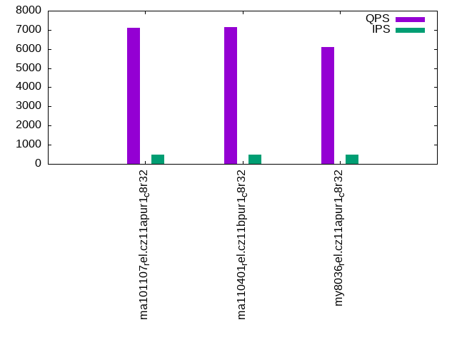

This is a report for the insert benchmark with 50M docs and 1 client(s). It is generated by scripts (bash, awk, sed) and Tufte might not be impressed. An overview of the insert benchmark is here and a short update is here. Below, by DBMS, I mean DBMS+version.config. An example is my8020.c10b40 where my means MySQL, 8020 is version 8.0.20 and c10b40 is the name for the configuration file.
The test server has 8 AMD cores, 32G RAM and an NVMe SSD. It is described here as the ASUS PN53. The benchmark was run with 1 client and there were 1 or 3 connections per client (1 for queries or inserts without rate limits, 1+1 for rate limited inserts+deletes). It uses 1 table. It loads 50M rows per table without secondary indexes, creates 3 secondary indexes per table, then inserts 40m+10m rows per table with a delete per insert to avoid growing the table. It then does 6 read+write tests for 1800s each that do queries as fast as possible with 100,100,500,500,1000,1000 inserts/s and the same for deletes/s per client concurrent with the queries. The database is cached in memory. Clients and the DBMS share one server. The per-database configs are in the per-database subdirectories here.
The tested DBMS are:
The numbers are inserts/s for l.i0, l.i1 and l.i2, indexed docs (or rows) /s for l.x and queries/s for qr100, qp100 thru qr1000, qp1000" The values are the average rate over the entire test for inserts (IPS) and queries (QPS). The range of values for IPS and QPS is split into 3 parts: bottom 25%, middle 50%, top 25%. Values in the bottom 25% have a red background, values in the top 25% have a green background and values in the middle have no color. A gray background is used for values that can be ignored because the DBMS did not sustain the target insert rate. Red backgrounds are not used when the minimum value is within 80% of the max value.
| dbms | l.i0 | l.x | l.i1 | l.i2 | qr100 | qp100 | qr500 | qp500 | qr1000 | qp1000 |
|---|---|---|---|---|---|---|---|---|---|---|
| ma101107_rel.cz11apur1_c8r32 | 158228 | 201613 | 34335 | 22573 | 8238 | 7129 | 8296 | 7095 | 8190 | 7094 |
| ma110401_rel.cz11bpur1_c8r32 | 161812 | 200000 | 31620 | 21882 | 8315 | 7135 | 8356 | 7149 | 8316 | 7113 |
| my8036_rel.cz11apur1_c8r32 | 108696 | 259068 | 30960 | 18349 | 8207 | 6109 | 8146 | 6099 | 8230 | 6095 |
This table has relative throughput, throughput for the DBMS relative to the DBMS in the first line, using the absolute throughput from the previous table. Values less than 0.95 have a yellow background. Values greater than 1.05 have a blue background.
| dbms | l.i0 | l.x | l.i1 | l.i2 | qr100 | qp100 | qr500 | qp500 | qr1000 | qp1000 |
|---|---|---|---|---|---|---|---|---|---|---|
| ma101107_rel.cz11apur1_c8r32 | 1.00 | 1.00 | 1.00 | 1.00 | 1.00 | 1.00 | 1.00 | 1.00 | 1.00 | 1.00 |
| ma110401_rel.cz11bpur1_c8r32 | 1.02 | 0.99 | 0.92 | 0.97 | 1.01 | 1.00 | 1.01 | 1.01 | 1.02 | 1.00 |
| my8036_rel.cz11apur1_c8r32 | 0.69 | 1.28 | 0.90 | 0.81 | 1.00 | 0.86 | 0.98 | 0.86 | 1.00 | 0.86 |
This lists the average rate of inserts/s for the tests that do inserts concurrent with queries. For such tests the query rate is listed in the table above. The read+write tests are setup so that the insert rate should match the target rate every second. Cells that are not at least 95% of the target have a red background to indicate a failure to satisfy the target.
| dbms | qr100.L1 | qp100.L2 | qr500.L3 | qp500.L4 | qr1000.L5 | qp1000.L6 |
|---|---|---|---|---|---|---|
| ma101107_rel.cz11apur1_c8r32 | 100 | 100 | 499 | 499 | 999 | 999 |
| ma110401_rel.cz11bpur1_c8r32 | 100 | 100 | 499 | 499 | 999 | 999 |
| my8036_rel.cz11apur1_c8r32 | 100 | 100 | 499 | 499 | 999 | 999 |
| target | 100 | 100 | 500 | 500 | 1000 | 1000 |
l.i0: load without secondary indexes. Graphs for performance per 1-second interval are here.
Average throughput:
Insert response time histogram: each cell has the percentage of responses that take <= the time in the header and max is the max response time in seconds. For the max column values in the top 25% of the range have a red background and in the bottom 25% of the range have a green background. The red background is not used when the min value is within 80% of the max value.
| dbms | 256us | 1ms | 4ms | 16ms | 64ms | 256ms | 1s | 4s | 16s | gt | max |
|---|---|---|---|---|---|---|---|---|---|---|---|
| ma101107_rel.cz11apur1_c8r32 | 99.585 | 0.167 | 0.235 | 0.008 | 0.005 | 0.164 | |||||
| ma110401_rel.cz11bpur1_c8r32 | 99.590 | 0.164 | 0.223 | 0.018 | 0.005 | 0.197 | |||||
| my8036_rel.cz11apur1_c8r32 | 99.249 | 0.367 | 0.252 | 0.131 | 0.002 | 0.079 |
Performance metrics for the DBMS listed above. Some are normalized by throughput, others are not. Legend for results is here.
ips qps rps rmbps wps wmbps rpq rkbpq wpi wkbpi csps cpups cspq cpupq dbgb1 dbgb2 rss maxop p50 p99 tag 158228 0 0 0.0 643.2 40.4 0.000 0.000 0.004 0.261 19214 23.3 0.121 12 3.3 34.1 3.7 0.164 160124 138850 ma101107_rel.cz11apur1_c8r32 161812 0 0 0.0 656.8 40.6 0.000 0.000 0.004 0.257 20447 23.8 0.126 12 3.3 34.1 3.8 0.197 162921 139548 ma110401_rel.cz11bpur1_c8r32 108696 0 0 0.0 576.2 35.3 0.000 0.000 0.005 0.333 12490 17.8 0.115 13 3.3 33.9 5.4 0.079 109179 100591 my8036_rel.cz11apur1_c8r32
l.x: create secondary indexes.
Average throughput:
Performance metrics for the DBMS listed above. Some are normalized by throughput, others are not. Legend for results is here.
ips qps rps rmbps wps wmbps rpq rkbpq wpi wkbpi csps cpups cspq cpupq dbgb1 dbgb2 rss maxop p50 p99 tag 201613 0 0 0.0 2335.6 178.4 0.000 0.000 0.012 0.906 5195 12.1 0.026 5 7.5 38.3 6.9 0.002 NA NA ma101107_rel.cz11apur1_c8r32 200000 0 0 0.0 2299.1 176.1 0.000 0.000 0.011 0.901 5108 12.0 0.026 5 7.5 38.3 6.7 0.001 NA NA ma110401_rel.cz11bpur1_c8r32 259068 0 1330 84.2 5274.5 304.2 0.005 0.333 0.020 1.202 18413 40.9 0.071 13 7.6 38.1 9.1 0.002 NA NA my8036_rel.cz11apur1_c8r32
l.i1: continue load after secondary indexes created with 50 inserts per transaction. Graphs for performance per 1-second interval are here.
Average throughput:
Insert response time histogram: each cell has the percentage of responses that take <= the time in the header and max is the max response time in seconds. For the max column values in the top 25% of the range have a red background and in the bottom 25% of the range have a green background. The red background is not used when the min value is within 80% of the max value.
| dbms | 256us | 1ms | 4ms | 16ms | 64ms | 256ms | 1s | 4s | 16s | gt | max |
|---|---|---|---|---|---|---|---|---|---|---|---|
| ma101107_rel.cz11apur1_c8r32 | 2.921 | 95.920 | 1.122 | 0.036 | 0.001 | 0.236 | |||||
| ma110401_rel.cz11bpur1_c8r32 | 5.355 | 92.048 | 2.305 | 0.289 | 0.003 | 0.229 | |||||
| my8036_rel.cz11apur1_c8r32 | 97.843 | 2.025 | 0.131 | 0.001 | 0.097 |
Delete response time histogram: each cell has the percentage of responses that take <= the time in the header and max is the max response time in seconds. For the max column values in the top 25% of the range have a red background and in the bottom 25% of the range have a green background. The red background is not used when the min value is within 80% of the max value.
| dbms | 256us | 1ms | 4ms | 16ms | 64ms | 256ms | 1s | 4s | 16s | gt | max |
|---|---|---|---|---|---|---|---|---|---|---|---|
| ma101107_rel.cz11apur1_c8r32 | 49.686 | 49.472 | 0.814 | 0.026 | 0.001 | 0.234 | |||||
| ma110401_rel.cz11bpur1_c8r32 | 54.844 | 42.913 | 1.995 | 0.245 | 0.003 | 0.228 | |||||
| my8036_rel.cz11apur1_c8r32 | 53.232 | 45.212 | 1.524 | 0.031 | nonzero | 0.088 |
Performance metrics for the DBMS listed above. Some are normalized by throughput, others are not. Legend for results is here.
ips qps rps rmbps wps wmbps rpq rkbpq wpi wkbpi csps cpups cspq cpupq dbgb1 dbgb2 rss maxop p50 p99 tag 34335 0 878 3.4 5352.3 180.8 0.026 0.102 0.156 5.393 88977 29.9 2.591 70 10.1 40.9 10.0 0.236 36722 11038 ma101107_rel.cz11apur1_c8r32 31620 0 833 3.3 4978.8 166.5 0.026 0.105 0.157 5.392 80700 27.3 2.552 69 10.1 40.9 10.0 0.229 32065 12686 ma110401_rel.cz11bpur1_c8r32 30960 0 175 2.7 4996.7 184.5 0.006 0.091 0.161 6.104 27393 34.3 0.885 89 10.6 41.6 12.7 0.097 33264 3946 my8036_rel.cz11apur1_c8r32
l.i2: continue load after secondary indexes created with 5 inserts per transaction. Graphs for performance per 1-second interval are here.
Average throughput:
Insert response time histogram: each cell has the percentage of responses that take <= the time in the header and max is the max response time in seconds. For the max column values in the top 25% of the range have a red background and in the bottom 25% of the range have a green background. The red background is not used when the min value is within 80% of the max value.
| dbms | 256us | 1ms | 4ms | 16ms | 64ms | 256ms | 1s | 4s | 16s | gt | max |
|---|---|---|---|---|---|---|---|---|---|---|---|
| ma101107_rel.cz11apur1_c8r32 | 88.990 | 10.935 | 0.064 | 0.011 | nonzero | 0.059 | |||||
| ma110401_rel.cz11bpur1_c8r32 | 90.945 | 8.879 | 0.057 | 0.116 | 0.003 | 0.061 | |||||
| my8036_rel.cz11apur1_c8r32 | 77.509 | 22.345 | 0.008 | 0.137 | 0.001 | 0.060 |
Delete response time histogram: each cell has the percentage of responses that take <= the time in the header and max is the max response time in seconds. For the max column values in the top 25% of the range have a red background and in the bottom 25% of the range have a green background. The red background is not used when the min value is within 80% of the max value.
| dbms | 256us | 1ms | 4ms | 16ms | 64ms | 256ms | 1s | 4s | 16s | gt | max |
|---|---|---|---|---|---|---|---|---|---|---|---|
| ma101107_rel.cz11apur1_c8r32 | 95.656 | 4.276 | 0.058 | 0.010 | nonzero | 0.059 | |||||
| ma110401_rel.cz11bpur1_c8r32 | 94.776 | 5.068 | 0.051 | 0.103 | 0.003 | 0.061 | |||||
| my8036_rel.cz11apur1_c8r32 | 92.298 | 7.564 | 0.005 | 0.132 | 0.001 | 0.053 |
Performance metrics for the DBMS listed above. Some are normalized by throughput, others are not. Legend for results is here.
ips qps rps rmbps wps wmbps rpq rkbpq wpi wkbpi csps cpups cspq cpupq dbgb1 dbgb2 rss maxop p50 p99 tag 22573 0 3214 12.6 2628.4 91.2 0.142 0.569 0.116 4.137 114634 33.0 5.078 117 10.3 41.2 10.2 0.059 22546 21367 ma101107_rel.cz11apur1_c8r32 21882 0 3106 12.1 2556.0 87.9 0.142 0.568 0.117 4.113 111089 31.9 5.077 117 10.3 41.1 10.2 0.061 22631 18795 ma110401_rel.cz11bpur1_c8r32 18349 0 28 0.4 2630.8 91.0 0.002 0.025 0.143 5.077 75403 33.4 4.109 146 10.9 41.8 13.2 0.060 18370 17456 my8036_rel.cz11apur1_c8r32
qr100.L1: range queries with 100 insert/s per client. Graphs for performance per 1-second interval are here.
Average throughput:
Query response time histogram: each cell has the percentage of responses that take <= the time in the header and max is the max response time in seconds. For max values in the top 25% of the range have a red background and in the bottom 25% of the range have a green background. The red background is not used when the min value is within 80% of the max value.
| dbms | 256us | 1ms | 4ms | 16ms | 64ms | 256ms | 1s | 4s | 16s | gt | max |
|---|---|---|---|---|---|---|---|---|---|---|---|
| ma101107_rel.cz11apur1_c8r32 | 99.995 | 0.005 | 0.001 | ||||||||
| ma110401_rel.cz11bpur1_c8r32 | 99.995 | 0.005 | 0.001 | ||||||||
| my8036_rel.cz11apur1_c8r32 | 99.979 | 0.021 | nonzero | 0.002 |
Insert response time histogram: each cell has the percentage of responses that take <= the time in the header and max is the max response time in seconds. For max values in the top 25% of the range have a red background and in the bottom 25% of the range have a green background. The red background is not used when the min value is within 80% of the max value.
| dbms | 256us | 1ms | 4ms | 16ms | 64ms | 256ms | 1s | 4s | 16s | gt | max |
|---|---|---|---|---|---|---|---|---|---|---|---|
| ma101107_rel.cz11apur1_c8r32 | 0.611 | 52.750 | 46.639 | 0.011 | |||||||
| ma110401_rel.cz11bpur1_c8r32 | 1.139 | 52.306 | 46.556 | 0.011 | |||||||
| my8036_rel.cz11apur1_c8r32 | 99.917 | 0.083 | 0.010 |
Delete response time histogram: each cell has the percentage of responses that take <= the time in the header and max is the max response time in seconds. For max values in the top 25% of the range have a red background and in the bottom 25% of the range have a green background. The red background is not used when the min value is within 80% of the max value.
| dbms | 256us | 1ms | 4ms | 16ms | 64ms | 256ms | 1s | 4s | 16s | gt | max |
|---|---|---|---|---|---|---|---|---|---|---|---|
| ma101107_rel.cz11apur1_c8r32 | 3.417 | 49.944 | 46.639 | 0.011 | |||||||
| ma110401_rel.cz11bpur1_c8r32 | 3.889 | 49.556 | 46.556 | 0.011 | |||||||
| my8036_rel.cz11apur1_c8r32 | 48.444 | 51.500 | 0.056 | 0.007 |
Performance metrics for the DBMS listed above. Some are normalized by throughput, others are not. Legend for results is here.
ips qps rps rmbps wps wmbps rpq rkbpq wpi wkbpi csps cpups cspq cpupq dbgb1 dbgb2 rss maxop p50 p99 tag 100 8238 4 0.0 2.4 0.1 0.000 0.002 0.024 1.192 31658 12.6 3.843 122 10.3 41.2 10.2 0.001 8247 8183 ma101107_rel.cz11apur1_c8r32 100 8315 3 0.0 2.3 0.1 0.000 0.002 0.024 1.181 31944 12.6 3.842 121 10.3 41.1 10.2 0.001 8313 8231 ma110401_rel.cz11bpur1_c8r32 100 8207 0 0.0 181.5 4.6 0.000 0.000 1.818 46.833 32270 12.5 3.932 122 10.9 41.8 13.2 0.002 8215 8151 my8036_rel.cz11apur1_c8r32
qp100.L2: point queries with 100 insert/s per client. Graphs for performance per 1-second interval are here.
Average throughput:
Query response time histogram: each cell has the percentage of responses that take <= the time in the header and max is the max response time in seconds. For max values in the top 25% of the range have a red background and in the bottom 25% of the range have a green background. The red background is not used when the min value is within 80% of the max value.
| dbms | 256us | 1ms | 4ms | 16ms | 64ms | 256ms | 1s | 4s | 16s | gt | max |
|---|---|---|---|---|---|---|---|---|---|---|---|
| ma101107_rel.cz11apur1_c8r32 | 99.985 | 0.015 | 0.001 | ||||||||
| ma110401_rel.cz11bpur1_c8r32 | 99.988 | 0.012 | 0.001 | ||||||||
| my8036_rel.cz11apur1_c8r32 | 99.855 | 0.145 | nonzero | 0.002 |
Insert response time histogram: each cell has the percentage of responses that take <= the time in the header and max is the max response time in seconds. For max values in the top 25% of the range have a red background and in the bottom 25% of the range have a green background. The red background is not used when the min value is within 80% of the max value.
| dbms | 256us | 1ms | 4ms | 16ms | 64ms | 256ms | 1s | 4s | 16s | gt | max |
|---|---|---|---|---|---|---|---|---|---|---|---|
| ma101107_rel.cz11apur1_c8r32 | 0.028 | 53.333 | 46.639 | 0.011 | |||||||
| ma110401_rel.cz11bpur1_c8r32 | 0.167 | 53.278 | 46.556 | 0.015 | |||||||
| my8036_rel.cz11apur1_c8r32 | 99.833 | 0.167 | 0.011 |
Delete response time histogram: each cell has the percentage of responses that take <= the time in the header and max is the max response time in seconds. For max values in the top 25% of the range have a red background and in the bottom 25% of the range have a green background. The red background is not used when the min value is within 80% of the max value.
| dbms | 256us | 1ms | 4ms | 16ms | 64ms | 256ms | 1s | 4s | 16s | gt | max |
|---|---|---|---|---|---|---|---|---|---|---|---|
| ma101107_rel.cz11apur1_c8r32 | 2.444 | 50.917 | 46.639 | 0.011 | |||||||
| ma110401_rel.cz11bpur1_c8r32 | 2.806 | 50.667 | 46.528 | 0.011 | |||||||
| my8036_rel.cz11apur1_c8r32 | 0.861 | 99.028 | 0.111 | 0.007 |
Performance metrics for the DBMS listed above. Some are normalized by throughput, others are not. Legend for results is here.
ips qps rps rmbps wps wmbps rpq rkbpq wpi wkbpi csps cpups cspq cpupq dbgb1 dbgb2 rss maxop p50 p99 tag 100 7129 3 0.0 8.6 0.3 0.000 0.002 0.086 2.944 28770 13.1 4.035 147 10.3 41.2 10.2 0.001 7128 7019 ma101107_rel.cz11apur1_c8r32 100 7135 3 0.0 15.1 0.5 0.000 0.002 0.151 4.722 28821 13.1 4.040 147 10.3 41.1 10.2 0.001 7144 6952 ma110401_rel.cz11bpur1_c8r32 100 6109 0 0.0 53.8 1.4 0.000 0.000 0.539 14.211 24889 13.1 4.074 172 10.9 41.8 13.2 0.002 6110 5961 my8036_rel.cz11apur1_c8r32
qr500.L3: range queries with 500 insert/s per client. Graphs for performance per 1-second interval are here.
Average throughput:
Query response time histogram: each cell has the percentage of responses that take <= the time in the header and max is the max response time in seconds. For max values in the top 25% of the range have a red background and in the bottom 25% of the range have a green background. The red background is not used when the min value is within 80% of the max value.
| dbms | 256us | 1ms | 4ms | 16ms | 64ms | 256ms | 1s | 4s | 16s | gt | max |
|---|---|---|---|---|---|---|---|---|---|---|---|
| ma101107_rel.cz11apur1_c8r32 | 99.989 | 0.011 | nonzero | nonzero | 0.005 | ||||||
| ma110401_rel.cz11bpur1_c8r32 | 99.989 | 0.011 | nonzero | nonzero | 0.009 | ||||||
| my8036_rel.cz11apur1_c8r32 | 99.975 | 0.025 | nonzero | 0.002 |
Insert response time histogram: each cell has the percentage of responses that take <= the time in the header and max is the max response time in seconds. For max values in the top 25% of the range have a red background and in the bottom 25% of the range have a green background. The red background is not used when the min value is within 80% of the max value.
| dbms | 256us | 1ms | 4ms | 16ms | 64ms | 256ms | 1s | 4s | 16s | gt | max |
|---|---|---|---|---|---|---|---|---|---|---|---|
| ma101107_rel.cz11apur1_c8r32 | 17.539 | 73.150 | 9.311 | 0.011 | |||||||
| ma110401_rel.cz11bpur1_c8r32 | 23.611 | 67.039 | 9.350 | 0.011 | |||||||
| my8036_rel.cz11apur1_c8r32 | 99.856 | 0.133 | 0.011 | 0.023 |
Delete response time histogram: each cell has the percentage of responses that take <= the time in the header and max is the max response time in seconds. For max values in the top 25% of the range have a red background and in the bottom 25% of the range have a green background. The red background is not used when the min value is within 80% of the max value.
| dbms | 256us | 1ms | 4ms | 16ms | 64ms | 256ms | 1s | 4s | 16s | gt | max |
|---|---|---|---|---|---|---|---|---|---|---|---|
| ma101107_rel.cz11apur1_c8r32 | 79.056 | 11.633 | 9.311 | 0.011 | |||||||
| ma110401_rel.cz11bpur1_c8r32 | 78.917 | 11.744 | 9.339 | 0.011 | |||||||
| my8036_rel.cz11apur1_c8r32 | 82.972 | 16.917 | 0.106 | 0.006 | 0.023 |
Performance metrics for the DBMS listed above. Some are normalized by throughput, others are not. Legend for results is here.
ips qps rps rmbps wps wmbps rpq rkbpq wpi wkbpi csps cpups cspq cpupq dbgb1 dbgb2 rss maxop p50 p99 tag 499 8296 19 0.1 24.8 1.1 0.002 0.009 0.050 2.203 32167 13.2 3.878 127 10.3 41.2 10.2 0.005 8295 8231 ma101107_rel.cz11apur1_c8r32 499 8356 19 0.1 25.0 1.1 0.002 0.009 0.050 2.191 32396 13.1 3.877 125 10.3 41.1 10.2 0.009 8359 8279 ma110401_rel.cz11bpur1_c8r32 499 8146 0 0.0 125.5 3.6 0.000 0.000 0.251 7.436 31964 12.9 3.924 127 10.9 41.8 13.2 0.002 8151 8103 my8036_rel.cz11apur1_c8r32
qp500.L4: point queries with 500 insert/s per client. Graphs for performance per 1-second interval are here.
Average throughput:
Query response time histogram: each cell has the percentage of responses that take <= the time in the header and max is the max response time in seconds. For max values in the top 25% of the range have a red background and in the bottom 25% of the range have a green background. The red background is not used when the min value is within 80% of the max value.
| dbms | 256us | 1ms | 4ms | 16ms | 64ms | 256ms | 1s | 4s | 16s | gt | max |
|---|---|---|---|---|---|---|---|---|---|---|---|
| ma101107_rel.cz11apur1_c8r32 | 99.970 | 0.030 | nonzero | 0.002 | |||||||
| ma110401_rel.cz11bpur1_c8r32 | 99.975 | 0.025 | nonzero | 0.002 | |||||||
| my8036_rel.cz11apur1_c8r32 | 99.792 | 0.208 | nonzero | 0.003 |
Insert response time histogram: each cell has the percentage of responses that take <= the time in the header and max is the max response time in seconds. For max values in the top 25% of the range have a red background and in the bottom 25% of the range have a green background. The red background is not used when the min value is within 80% of the max value.
| dbms | 256us | 1ms | 4ms | 16ms | 64ms | 256ms | 1s | 4s | 16s | gt | max |
|---|---|---|---|---|---|---|---|---|---|---|---|
| ma101107_rel.cz11apur1_c8r32 | 2.483 | 88.256 | 9.261 | 0.011 | |||||||
| ma110401_rel.cz11bpur1_c8r32 | 13.644 | 77.033 | 9.322 | 0.015 | |||||||
| my8036_rel.cz11apur1_c8r32 | 99.822 | 0.172 | 0.006 | 0.024 |
Delete response time histogram: each cell has the percentage of responses that take <= the time in the header and max is the max response time in seconds. For max values in the top 25% of the range have a red background and in the bottom 25% of the range have a green background. The red background is not used when the min value is within 80% of the max value.
| dbms | 256us | 1ms | 4ms | 16ms | 64ms | 256ms | 1s | 4s | 16s | gt | max |
|---|---|---|---|---|---|---|---|---|---|---|---|
| ma101107_rel.cz11apur1_c8r32 | 70.511 | 20.228 | 9.261 | 0.011 | |||||||
| ma110401_rel.cz11bpur1_c8r32 | 76.539 | 14.139 | 9.322 | 0.011 | |||||||
| my8036_rel.cz11apur1_c8r32 | 60.550 | 39.311 | 0.133 | 0.006 | 0.023 |
Performance metrics for the DBMS listed above. Some are normalized by throughput, others are not. Legend for results is here.
ips qps rps rmbps wps wmbps rpq rkbpq wpi wkbpi csps cpups cspq cpupq dbgb1 dbgb2 rss maxop p50 p99 tag 499 7095 18 0.1 24.8 1.1 0.003 0.010 0.050 2.191 28952 13.3 4.081 150 10.3 41.2 10.2 0.002 7096 6936 ma101107_rel.cz11apur1_c8r32 499 7149 18 0.1 25.0 1.1 0.003 0.010 0.050 2.182 29161 13.4 4.079 150 10.3 41.1 10.2 0.002 7160 6952 ma110401_rel.cz11bpur1_c8r32 499 6099 0 0.0 53.8 1.8 0.000 0.000 0.108 3.790 24928 13.2 4.087 173 10.9 41.8 13.2 0.003 6105 5946 my8036_rel.cz11apur1_c8r32
qr1000.L5: range queries with 1000 insert/s per client. Graphs for performance per 1-second interval are here.
Average throughput:
Query response time histogram: each cell has the percentage of responses that take <= the time in the header and max is the max response time in seconds. For max values in the top 25% of the range have a red background and in the bottom 25% of the range have a green background. The red background is not used when the min value is within 80% of the max value.
| dbms | 256us | 1ms | 4ms | 16ms | 64ms | 256ms | 1s | 4s | 16s | gt | max |
|---|---|---|---|---|---|---|---|---|---|---|---|
| ma101107_rel.cz11apur1_c8r32 | 99.983 | 0.017 | 0.001 | nonzero | 0.006 | ||||||
| ma110401_rel.cz11bpur1_c8r32 | 99.985 | 0.015 | nonzero | nonzero | nonzero | 0.020 | |||||
| my8036_rel.cz11apur1_c8r32 | 99.969 | 0.031 | nonzero | nonzero | 0.004 |
Insert response time histogram: each cell has the percentage of responses that take <= the time in the header and max is the max response time in seconds. For max values in the top 25% of the range have a red background and in the bottom 25% of the range have a green background. The red background is not used when the min value is within 80% of the max value.
| dbms | 256us | 1ms | 4ms | 16ms | 64ms | 256ms | 1s | 4s | 16s | gt | max |
|---|---|---|---|---|---|---|---|---|---|---|---|
| ma101107_rel.cz11apur1_c8r32 | 22.564 | 72.747 | 4.686 | 0.003 | 0.033 | ||||||
| ma110401_rel.cz11bpur1_c8r32 | 37.619 | 57.611 | 4.764 | 0.006 | 0.032 | ||||||
| my8036_rel.cz11apur1_c8r32 | 99.822 | 0.172 | 0.006 | 0.024 |
Delete response time histogram: each cell has the percentage of responses that take <= the time in the header and max is the max response time in seconds. For max values in the top 25% of the range have a red background and in the bottom 25% of the range have a green background. The red background is not used when the min value is within 80% of the max value.
| dbms | 256us | 1ms | 4ms | 16ms | 64ms | 256ms | 1s | 4s | 16s | gt | max |
|---|---|---|---|---|---|---|---|---|---|---|---|
| ma101107_rel.cz11apur1_c8r32 | 86.514 | 8.814 | 4.669 | 0.003 | 0.032 | ||||||
| ma110401_rel.cz11bpur1_c8r32 | 86.775 | 8.503 | 4.717 | 0.006 | 0.030 | ||||||
| my8036_rel.cz11apur1_c8r32 | 78.578 | 21.286 | 0.136 | 0.013 |
Performance metrics for the DBMS listed above. Some are normalized by throughput, others are not. Legend for results is here.
ips qps rps rmbps wps wmbps rpq rkbpq wpi wkbpi csps cpups cspq cpupq dbgb1 dbgb2 rss maxop p50 p99 tag 999 8190 37 0.1 123.6 4.1 0.005 0.018 0.124 4.191 32534 13.4 3.973 131 10.3 41.2 10.2 0.006 8199 8087 ma101107_rel.cz11apur1_c8r32 999 8316 37 0.1 126.9 4.1 0.004 0.018 0.127 4.239 33032 13.4 3.972 129 10.3 41.1 10.2 0.020 8311 8215 ma110401_rel.cz11bpur1_c8r32 999 8230 0 0.0 195.1 5.9 0.000 0.000 0.195 6.096 32664 13.4 3.969 130 10.9 41.8 13.2 0.004 8231 8183 my8036_rel.cz11apur1_c8r32
qp1000.L6: point queries with 1000 insert/s per client. Graphs for performance per 1-second interval are here.
Average throughput:
Query response time histogram: each cell has the percentage of responses that take <= the time in the header and max is the max response time in seconds. For max values in the top 25% of the range have a red background and in the bottom 25% of the range have a green background. The red background is not used when the min value is within 80% of the max value.
| dbms | 256us | 1ms | 4ms | 16ms | 64ms | 256ms | 1s | 4s | 16s | gt | max |
|---|---|---|---|---|---|---|---|---|---|---|---|
| ma101107_rel.cz11apur1_c8r32 | 99.960 | 0.039 | nonzero | nonzero | 0.011 | ||||||
| ma110401_rel.cz11bpur1_c8r32 | 99.965 | 0.035 | nonzero | 0.002 | |||||||
| my8036_rel.cz11apur1_c8r32 | 99.767 | 0.233 | nonzero | 0.002 |
Insert response time histogram: each cell has the percentage of responses that take <= the time in the header and max is the max response time in seconds. For max values in the top 25% of the range have a red background and in the bottom 25% of the range have a green background. The red background is not used when the min value is within 80% of the max value.
| dbms | 256us | 1ms | 4ms | 16ms | 64ms | 256ms | 1s | 4s | 16s | gt | max |
|---|---|---|---|---|---|---|---|---|---|---|---|
| ma101107_rel.cz11apur1_c8r32 | 8.011 | 87.339 | 4.647 | 0.003 | 0.040 | ||||||
| ma110401_rel.cz11bpur1_c8r32 | 24.122 | 71.206 | 4.667 | 0.006 | 0.031 | ||||||
| my8036_rel.cz11apur1_c8r32 | 99.731 | 0.267 | 0.003 | 0.023 |
Delete response time histogram: each cell has the percentage of responses that take <= the time in the header and max is the max response time in seconds. For max values in the top 25% of the range have a red background and in the bottom 25% of the range have a green background. The red background is not used when the min value is within 80% of the max value.
| dbms | 256us | 1ms | 4ms | 16ms | 64ms | 256ms | 1s | 4s | 16s | gt | max |
|---|---|---|---|---|---|---|---|---|---|---|---|
| ma101107_rel.cz11apur1_c8r32 | 80.122 | 15.236 | 4.639 | 0.003 | 0.029 | ||||||
| ma110401_rel.cz11bpur1_c8r32 | 85.361 | 9.986 | 4.650 | 0.003 | 0.031 | ||||||
| my8036_rel.cz11apur1_c8r32 | 56.700 | 43.094 | 0.203 | 0.003 | 0.023 |
Performance metrics for the DBMS listed above. Some are normalized by throughput, others are not. Legend for results is here.
ips qps rps rmbps wps wmbps rpq rkbpq wpi wkbpi csps cpups cspq cpupq dbgb1 dbgb2 rss maxop p50 p99 tag 999 7094 37 0.1 51.7 2.1 0.005 0.021 0.052 2.194 29452 13.4 4.152 151 10.3 41.2 10.2 0.011 7096 6921 ma101107_rel.cz11apur1_c8r32 999 7113 37 0.1 52.0 2.1 0.005 0.021 0.052 2.181 29538 13.4 4.152 151 10.3 41.1 10.2 0.002 7115 6936 ma110401_rel.cz11bpur1_c8r32 999 6095 0 0.0 192.9 5.9 0.000 0.000 0.193 6.042 25497 14.0 4.184 184 10.9 41.9 13.2 0.002 6105 5961 my8036_rel.cz11apur1_c8r32
l.i0: load without secondary indexes
Performance metrics for all DBMS, not just the ones listed above. Some are normalized by throughput, others are not. Legend for results is here.
ips qps rps rmbps wps wmbps rpq rkbpq wpi wkbpi csps cpups cspq cpupq dbgb1 dbgb2 rss maxop p50 p99 tag 158228 0 0 0.0 643.2 40.4 0.000 0.000 0.004 0.261 19214 23.3 0.121 12 3.3 34.1 3.7 0.164 160124 138850 ma101107_rel.cz11apur1_c8r32 161812 0 0 0.0 656.8 40.6 0.000 0.000 0.004 0.257 20447 23.8 0.126 12 3.3 34.1 3.8 0.197 162921 139548 ma110401_rel.cz11bpur1_c8r32 108696 0 0 0.0 576.2 35.3 0.000 0.000 0.005 0.333 12490 17.8 0.115 13 3.3 33.9 5.4 0.079 109179 100591 my8036_rel.cz11apur1_c8r32
l.x: create secondary indexes
Performance metrics for all DBMS, not just the ones listed above. Some are normalized by throughput, others are not. Legend for results is here.
ips qps rps rmbps wps wmbps rpq rkbpq wpi wkbpi csps cpups cspq cpupq dbgb1 dbgb2 rss maxop p50 p99 tag 201613 0 0 0.0 2335.6 178.4 0.000 0.000 0.012 0.906 5195 12.1 0.026 5 7.5 38.3 6.9 0.002 NA NA ma101107_rel.cz11apur1_c8r32 200000 0 0 0.0 2299.1 176.1 0.000 0.000 0.011 0.901 5108 12.0 0.026 5 7.5 38.3 6.7 0.001 NA NA ma110401_rel.cz11bpur1_c8r32 259068 0 1330 84.2 5274.5 304.2 0.005 0.333 0.020 1.202 18413 40.9 0.071 13 7.6 38.1 9.1 0.002 NA NA my8036_rel.cz11apur1_c8r32
l.i1: continue load after secondary indexes created with 50 inserts per transaction
Performance metrics for all DBMS, not just the ones listed above. Some are normalized by throughput, others are not. Legend for results is here.
ips qps rps rmbps wps wmbps rpq rkbpq wpi wkbpi csps cpups cspq cpupq dbgb1 dbgb2 rss maxop p50 p99 tag 34335 0 878 3.4 5352.3 180.8 0.026 0.102 0.156 5.393 88977 29.9 2.591 70 10.1 40.9 10.0 0.236 36722 11038 ma101107_rel.cz11apur1_c8r32 31620 0 833 3.3 4978.8 166.5 0.026 0.105 0.157 5.392 80700 27.3 2.552 69 10.1 40.9 10.0 0.229 32065 12686 ma110401_rel.cz11bpur1_c8r32 30960 0 175 2.7 4996.7 184.5 0.006 0.091 0.161 6.104 27393 34.3 0.885 89 10.6 41.6 12.7 0.097 33264 3946 my8036_rel.cz11apur1_c8r32
l.i2: continue load after secondary indexes created with 5 inserts per transaction
Performance metrics for all DBMS, not just the ones listed above. Some are normalized by throughput, others are not. Legend for results is here.
ips qps rps rmbps wps wmbps rpq rkbpq wpi wkbpi csps cpups cspq cpupq dbgb1 dbgb2 rss maxop p50 p99 tag 22573 0 3214 12.6 2628.4 91.2 0.142 0.569 0.116 4.137 114634 33.0 5.078 117 10.3 41.2 10.2 0.059 22546 21367 ma101107_rel.cz11apur1_c8r32 21882 0 3106 12.1 2556.0 87.9 0.142 0.568 0.117 4.113 111089 31.9 5.077 117 10.3 41.1 10.2 0.061 22631 18795 ma110401_rel.cz11bpur1_c8r32 18349 0 28 0.4 2630.8 91.0 0.002 0.025 0.143 5.077 75403 33.4 4.109 146 10.9 41.8 13.2 0.060 18370 17456 my8036_rel.cz11apur1_c8r32
qr100.L1: range queries with 100 insert/s per client
Performance metrics for all DBMS, not just the ones listed above. Some are normalized by throughput, others are not. Legend for results is here.
ips qps rps rmbps wps wmbps rpq rkbpq wpi wkbpi csps cpups cspq cpupq dbgb1 dbgb2 rss maxop p50 p99 tag 100 8238 4 0.0 2.4 0.1 0.000 0.002 0.024 1.192 31658 12.6 3.843 122 10.3 41.2 10.2 0.001 8247 8183 ma101107_rel.cz11apur1_c8r32 100 8315 3 0.0 2.3 0.1 0.000 0.002 0.024 1.181 31944 12.6 3.842 121 10.3 41.1 10.2 0.001 8313 8231 ma110401_rel.cz11bpur1_c8r32 100 8207 0 0.0 181.5 4.6 0.000 0.000 1.818 46.833 32270 12.5 3.932 122 10.9 41.8 13.2 0.002 8215 8151 my8036_rel.cz11apur1_c8r32
qp100.L2: point queries with 100 insert/s per client
Performance metrics for all DBMS, not just the ones listed above. Some are normalized by throughput, others are not. Legend for results is here.
ips qps rps rmbps wps wmbps rpq rkbpq wpi wkbpi csps cpups cspq cpupq dbgb1 dbgb2 rss maxop p50 p99 tag 100 7129 3 0.0 8.6 0.3 0.000 0.002 0.086 2.944 28770 13.1 4.035 147 10.3 41.2 10.2 0.001 7128 7019 ma101107_rel.cz11apur1_c8r32 100 7135 3 0.0 15.1 0.5 0.000 0.002 0.151 4.722 28821 13.1 4.040 147 10.3 41.1 10.2 0.001 7144 6952 ma110401_rel.cz11bpur1_c8r32 100 6109 0 0.0 53.8 1.4 0.000 0.000 0.539 14.211 24889 13.1 4.074 172 10.9 41.8 13.2 0.002 6110 5961 my8036_rel.cz11apur1_c8r32
qr500.L3: range queries with 500 insert/s per client
Performance metrics for all DBMS, not just the ones listed above. Some are normalized by throughput, others are not. Legend for results is here.
ips qps rps rmbps wps wmbps rpq rkbpq wpi wkbpi csps cpups cspq cpupq dbgb1 dbgb2 rss maxop p50 p99 tag 499 8296 19 0.1 24.8 1.1 0.002 0.009 0.050 2.203 32167 13.2 3.878 127 10.3 41.2 10.2 0.005 8295 8231 ma101107_rel.cz11apur1_c8r32 499 8356 19 0.1 25.0 1.1 0.002 0.009 0.050 2.191 32396 13.1 3.877 125 10.3 41.1 10.2 0.009 8359 8279 ma110401_rel.cz11bpur1_c8r32 499 8146 0 0.0 125.5 3.6 0.000 0.000 0.251 7.436 31964 12.9 3.924 127 10.9 41.8 13.2 0.002 8151 8103 my8036_rel.cz11apur1_c8r32
qp500.L4: point queries with 500 insert/s per client
Performance metrics for all DBMS, not just the ones listed above. Some are normalized by throughput, others are not. Legend for results is here.
ips qps rps rmbps wps wmbps rpq rkbpq wpi wkbpi csps cpups cspq cpupq dbgb1 dbgb2 rss maxop p50 p99 tag 499 7095 18 0.1 24.8 1.1 0.003 0.010 0.050 2.191 28952 13.3 4.081 150 10.3 41.2 10.2 0.002 7096 6936 ma101107_rel.cz11apur1_c8r32 499 7149 18 0.1 25.0 1.1 0.003 0.010 0.050 2.182 29161 13.4 4.079 150 10.3 41.1 10.2 0.002 7160 6952 ma110401_rel.cz11bpur1_c8r32 499 6099 0 0.0 53.8 1.8 0.000 0.000 0.108 3.790 24928 13.2 4.087 173 10.9 41.8 13.2 0.003 6105 5946 my8036_rel.cz11apur1_c8r32
qr1000.L5: range queries with 1000 insert/s per client
Performance metrics for all DBMS, not just the ones listed above. Some are normalized by throughput, others are not. Legend for results is here.
ips qps rps rmbps wps wmbps rpq rkbpq wpi wkbpi csps cpups cspq cpupq dbgb1 dbgb2 rss maxop p50 p99 tag 999 8190 37 0.1 123.6 4.1 0.005 0.018 0.124 4.191 32534 13.4 3.973 131 10.3 41.2 10.2 0.006 8199 8087 ma101107_rel.cz11apur1_c8r32 999 8316 37 0.1 126.9 4.1 0.004 0.018 0.127 4.239 33032 13.4 3.972 129 10.3 41.1 10.2 0.020 8311 8215 ma110401_rel.cz11bpur1_c8r32 999 8230 0 0.0 195.1 5.9 0.000 0.000 0.195 6.096 32664 13.4 3.969 130 10.9 41.8 13.2 0.004 8231 8183 my8036_rel.cz11apur1_c8r32
qp1000.L6: point queries with 1000 insert/s per client
Performance metrics for all DBMS, not just the ones listed above. Some are normalized by throughput, others are not. Legend for results is here.
ips qps rps rmbps wps wmbps rpq rkbpq wpi wkbpi csps cpups cspq cpupq dbgb1 dbgb2 rss maxop p50 p99 tag 999 7094 37 0.1 51.7 2.1 0.005 0.021 0.052 2.194 29452 13.4 4.152 151 10.3 41.2 10.2 0.011 7096 6921 ma101107_rel.cz11apur1_c8r32 999 7113 37 0.1 52.0 2.1 0.005 0.021 0.052 2.181 29538 13.4 4.152 151 10.3 41.1 10.2 0.002 7115 6936 ma110401_rel.cz11bpur1_c8r32 999 6095 0 0.0 192.9 5.9 0.000 0.000 0.193 6.042 25497 14.0 4.184 184 10.9 41.9 13.2 0.002 6105 5961 my8036_rel.cz11apur1_c8r32
Insert response time histogram
256us 1ms 4ms 16ms 64ms 256ms 1s 4s 16s gt max tag 0.000 99.585 0.167 0.235 0.008 0.005 0.000 0.000 0.000 0.000 0.164 ma101107_rel.cz11apur1_c8r32 0.000 99.590 0.164 0.223 0.018 0.005 0.000 0.000 0.000 0.000 0.197 ma110401_rel.cz11bpur1_c8r32 0.000 99.249 0.367 0.252 0.131 0.002 0.000 0.000 0.000 0.000 0.079 my8036_rel.cz11apur1_c8r32
TODO - determine whether there is data for create index response time
Insert response time histogram
256us 1ms 4ms 16ms 64ms 256ms 1s 4s 16s gt max tag 0.000 2.921 95.920 1.122 0.036 0.001 0.000 0.000 0.000 0.000 0.236 ma101107_rel.cz11apur1_c8r32 0.000 5.355 92.048 2.305 0.289 0.003 0.000 0.000 0.000 0.000 0.229 ma110401_rel.cz11bpur1_c8r32 0.000 0.000 97.843 2.025 0.131 0.001 0.000 0.000 0.000 0.000 0.097 my8036_rel.cz11apur1_c8r32
Delete response time histogram
256us 1ms 4ms 16ms 64ms 256ms 1s 4s 16s gt max tag 0.000 49.686 49.472 0.814 0.026 0.001 0.000 0.000 0.000 0.000 0.234 ma101107_rel.cz11apur1_c8r32 0.000 54.844 42.913 1.995 0.245 0.003 0.000 0.000 0.000 0.000 0.228 ma110401_rel.cz11bpur1_c8r32 0.000 53.232 45.212 1.524 0.031 nonzero 0.000 0.000 0.000 0.000 0.088 my8036_rel.cz11apur1_c8r32
Insert response time histogram
256us 1ms 4ms 16ms 64ms 256ms 1s 4s 16s gt max tag 88.990 10.935 0.064 0.011 nonzero 0.000 0.000 0.000 0.000 0.000 0.059 ma101107_rel.cz11apur1_c8r32 90.945 8.879 0.057 0.116 0.003 0.000 0.000 0.000 0.000 0.000 0.061 ma110401_rel.cz11bpur1_c8r32 77.509 22.345 0.008 0.137 0.001 0.000 0.000 0.000 0.000 0.000 0.060 my8036_rel.cz11apur1_c8r32
Delete response time histogram
256us 1ms 4ms 16ms 64ms 256ms 1s 4s 16s gt max tag 95.656 4.276 0.058 0.010 nonzero 0.000 0.000 0.000 0.000 0.000 0.059 ma101107_rel.cz11apur1_c8r32 94.776 5.068 0.051 0.103 0.003 0.000 0.000 0.000 0.000 0.000 0.061 ma110401_rel.cz11bpur1_c8r32 92.298 7.564 0.005 0.132 0.001 0.000 0.000 0.000 0.000 0.000 0.053 my8036_rel.cz11apur1_c8r32
Query response time histogram
256us 1ms 4ms 16ms 64ms 256ms 1s 4s 16s gt max tag 99.995 0.005 0.000 0.000 0.000 0.000 0.000 0.000 0.000 0.000 0.001 ma101107_rel.cz11apur1_c8r32 99.995 0.005 0.000 0.000 0.000 0.000 0.000 0.000 0.000 0.000 0.001 ma110401_rel.cz11bpur1_c8r32 99.979 0.021 nonzero 0.000 0.000 0.000 0.000 0.000 0.000 0.000 0.002 my8036_rel.cz11apur1_c8r32
Insert response time histogram
256us 1ms 4ms 16ms 64ms 256ms 1s 4s 16s gt max tag 0.000 0.611 52.750 46.639 0.000 0.000 0.000 0.000 0.000 0.000 0.011 ma101107_rel.cz11apur1_c8r32 0.000 1.139 52.306 46.556 0.000 0.000 0.000 0.000 0.000 0.000 0.011 ma110401_rel.cz11bpur1_c8r32 0.000 0.000 99.917 0.083 0.000 0.000 0.000 0.000 0.000 0.000 0.010 my8036_rel.cz11apur1_c8r32
Delete response time histogram
256us 1ms 4ms 16ms 64ms 256ms 1s 4s 16s gt max tag 0.000 3.417 49.944 46.639 0.000 0.000 0.000 0.000 0.000 0.000 0.011 ma101107_rel.cz11apur1_c8r32 0.000 3.889 49.556 46.556 0.000 0.000 0.000 0.000 0.000 0.000 0.011 ma110401_rel.cz11bpur1_c8r32 0.000 48.444 51.500 0.056 0.000 0.000 0.000 0.000 0.000 0.000 0.007 my8036_rel.cz11apur1_c8r32
Query response time histogram
256us 1ms 4ms 16ms 64ms 256ms 1s 4s 16s gt max tag 99.985 0.015 0.000 0.000 0.000 0.000 0.000 0.000 0.000 0.000 0.001 ma101107_rel.cz11apur1_c8r32 99.988 0.012 0.000 0.000 0.000 0.000 0.000 0.000 0.000 0.000 0.001 ma110401_rel.cz11bpur1_c8r32 99.855 0.145 nonzero 0.000 0.000 0.000 0.000 0.000 0.000 0.000 0.002 my8036_rel.cz11apur1_c8r32
Insert response time histogram
256us 1ms 4ms 16ms 64ms 256ms 1s 4s 16s gt max tag 0.000 0.028 53.333 46.639 0.000 0.000 0.000 0.000 0.000 0.000 0.011 ma101107_rel.cz11apur1_c8r32 0.000 0.167 53.278 46.556 0.000 0.000 0.000 0.000 0.000 0.000 0.015 ma110401_rel.cz11bpur1_c8r32 0.000 0.000 99.833 0.167 0.000 0.000 0.000 0.000 0.000 0.000 0.011 my8036_rel.cz11apur1_c8r32
Delete response time histogram
256us 1ms 4ms 16ms 64ms 256ms 1s 4s 16s gt max tag 0.000 2.444 50.917 46.639 0.000 0.000 0.000 0.000 0.000 0.000 0.011 ma101107_rel.cz11apur1_c8r32 0.000 2.806 50.667 46.528 0.000 0.000 0.000 0.000 0.000 0.000 0.011 ma110401_rel.cz11bpur1_c8r32 0.000 0.861 99.028 0.111 0.000 0.000 0.000 0.000 0.000 0.000 0.007 my8036_rel.cz11apur1_c8r32
Query response time histogram
256us 1ms 4ms 16ms 64ms 256ms 1s 4s 16s gt max tag 99.989 0.011 nonzero nonzero 0.000 0.000 0.000 0.000 0.000 0.000 0.005 ma101107_rel.cz11apur1_c8r32 99.989 0.011 nonzero nonzero 0.000 0.000 0.000 0.000 0.000 0.000 0.009 ma110401_rel.cz11bpur1_c8r32 99.975 0.025 nonzero 0.000 0.000 0.000 0.000 0.000 0.000 0.000 0.002 my8036_rel.cz11apur1_c8r32
Insert response time histogram
256us 1ms 4ms 16ms 64ms 256ms 1s 4s 16s gt max tag 0.000 17.539 73.150 9.311 0.000 0.000 0.000 0.000 0.000 0.000 0.011 ma101107_rel.cz11apur1_c8r32 0.000 23.611 67.039 9.350 0.000 0.000 0.000 0.000 0.000 0.000 0.011 ma110401_rel.cz11bpur1_c8r32 0.000 0.000 99.856 0.133 0.011 0.000 0.000 0.000 0.000 0.000 0.023 my8036_rel.cz11apur1_c8r32
Delete response time histogram
256us 1ms 4ms 16ms 64ms 256ms 1s 4s 16s gt max tag 0.000 79.056 11.633 9.311 0.000 0.000 0.000 0.000 0.000 0.000 0.011 ma101107_rel.cz11apur1_c8r32 0.000 78.917 11.744 9.339 0.000 0.000 0.000 0.000 0.000 0.000 0.011 ma110401_rel.cz11bpur1_c8r32 0.000 82.972 16.917 0.106 0.006 0.000 0.000 0.000 0.000 0.000 0.023 my8036_rel.cz11apur1_c8r32
Query response time histogram
256us 1ms 4ms 16ms 64ms 256ms 1s 4s 16s gt max tag 99.970 0.030 nonzero 0.000 0.000 0.000 0.000 0.000 0.000 0.000 0.002 ma101107_rel.cz11apur1_c8r32 99.975 0.025 nonzero 0.000 0.000 0.000 0.000 0.000 0.000 0.000 0.002 ma110401_rel.cz11bpur1_c8r32 99.792 0.208 nonzero 0.000 0.000 0.000 0.000 0.000 0.000 0.000 0.003 my8036_rel.cz11apur1_c8r32
Insert response time histogram
256us 1ms 4ms 16ms 64ms 256ms 1s 4s 16s gt max tag 0.000 2.483 88.256 9.261 0.000 0.000 0.000 0.000 0.000 0.000 0.011 ma101107_rel.cz11apur1_c8r32 0.000 13.644 77.033 9.322 0.000 0.000 0.000 0.000 0.000 0.000 0.015 ma110401_rel.cz11bpur1_c8r32 0.000 0.000 99.822 0.172 0.006 0.000 0.000 0.000 0.000 0.000 0.024 my8036_rel.cz11apur1_c8r32
Delete response time histogram
256us 1ms 4ms 16ms 64ms 256ms 1s 4s 16s gt max tag 0.000 70.511 20.228 9.261 0.000 0.000 0.000 0.000 0.000 0.000 0.011 ma101107_rel.cz11apur1_c8r32 0.000 76.539 14.139 9.322 0.000 0.000 0.000 0.000 0.000 0.000 0.011 ma110401_rel.cz11bpur1_c8r32 0.000 60.550 39.311 0.133 0.006 0.000 0.000 0.000 0.000 0.000 0.023 my8036_rel.cz11apur1_c8r32
Query response time histogram
256us 1ms 4ms 16ms 64ms 256ms 1s 4s 16s gt max tag 99.983 0.017 0.001 nonzero 0.000 0.000 0.000 0.000 0.000 0.000 0.006 ma101107_rel.cz11apur1_c8r32 99.985 0.015 nonzero nonzero nonzero 0.000 0.000 0.000 0.000 0.000 0.020 ma110401_rel.cz11bpur1_c8r32 99.969 0.031 nonzero nonzero 0.000 0.000 0.000 0.000 0.000 0.000 0.004 my8036_rel.cz11apur1_c8r32
Insert response time histogram
256us 1ms 4ms 16ms 64ms 256ms 1s 4s 16s gt max tag 0.000 22.564 72.747 4.686 0.003 0.000 0.000 0.000 0.000 0.000 0.033 ma101107_rel.cz11apur1_c8r32 0.000 37.619 57.611 4.764 0.006 0.000 0.000 0.000 0.000 0.000 0.032 ma110401_rel.cz11bpur1_c8r32 0.000 0.000 99.822 0.172 0.006 0.000 0.000 0.000 0.000 0.000 0.024 my8036_rel.cz11apur1_c8r32
Delete response time histogram
256us 1ms 4ms 16ms 64ms 256ms 1s 4s 16s gt max tag 0.000 86.514 8.814 4.669 0.003 0.000 0.000 0.000 0.000 0.000 0.032 ma101107_rel.cz11apur1_c8r32 0.000 86.775 8.503 4.717 0.006 0.000 0.000 0.000 0.000 0.000 0.030 ma110401_rel.cz11bpur1_c8r32 0.000 78.578 21.286 0.136 0.000 0.000 0.000 0.000 0.000 0.000 0.013 my8036_rel.cz11apur1_c8r32
Query response time histogram
256us 1ms 4ms 16ms 64ms 256ms 1s 4s 16s gt max tag 99.960 0.039 nonzero nonzero 0.000 0.000 0.000 0.000 0.000 0.000 0.011 ma101107_rel.cz11apur1_c8r32 99.965 0.035 nonzero 0.000 0.000 0.000 0.000 0.000 0.000 0.000 0.002 ma110401_rel.cz11bpur1_c8r32 99.767 0.233 nonzero 0.000 0.000 0.000 0.000 0.000 0.000 0.000 0.002 my8036_rel.cz11apur1_c8r32
Insert response time histogram
256us 1ms 4ms 16ms 64ms 256ms 1s 4s 16s gt max tag 0.000 8.011 87.339 4.647 0.003 0.000 0.000 0.000 0.000 0.000 0.040 ma101107_rel.cz11apur1_c8r32 0.000 24.122 71.206 4.667 0.006 0.000 0.000 0.000 0.000 0.000 0.031 ma110401_rel.cz11bpur1_c8r32 0.000 0.000 99.731 0.267 0.003 0.000 0.000 0.000 0.000 0.000 0.023 my8036_rel.cz11apur1_c8r32
Delete response time histogram
256us 1ms 4ms 16ms 64ms 256ms 1s 4s 16s gt max tag 0.000 80.122 15.236 4.639 0.003 0.000 0.000 0.000 0.000 0.000 0.029 ma101107_rel.cz11apur1_c8r32 0.000 85.361 9.986 4.650 0.003 0.000 0.000 0.000 0.000 0.000 0.031 ma110401_rel.cz11bpur1_c8r32 0.000 56.700 43.094 0.203 0.003 0.000 0.000 0.000 0.000 0.000 0.023 my8036_rel.cz11apur1_c8r32